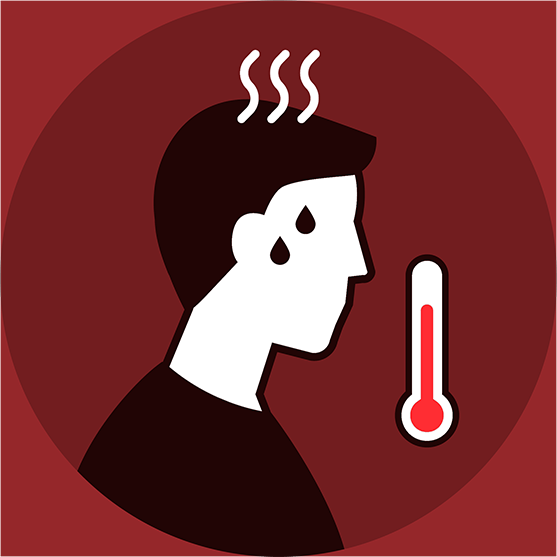
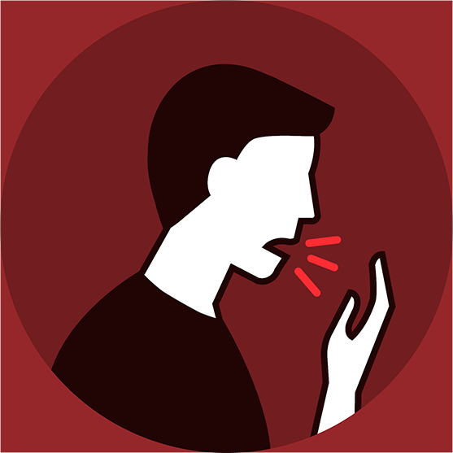
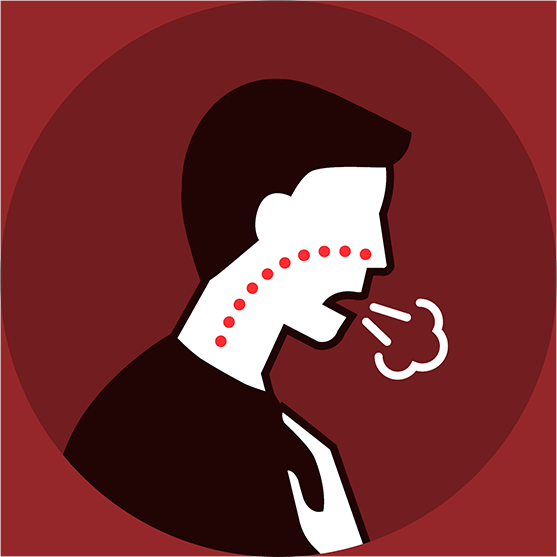
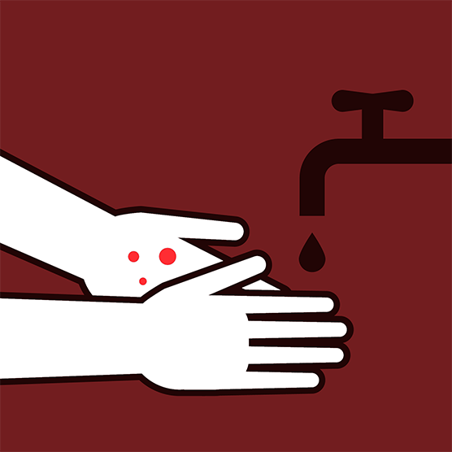
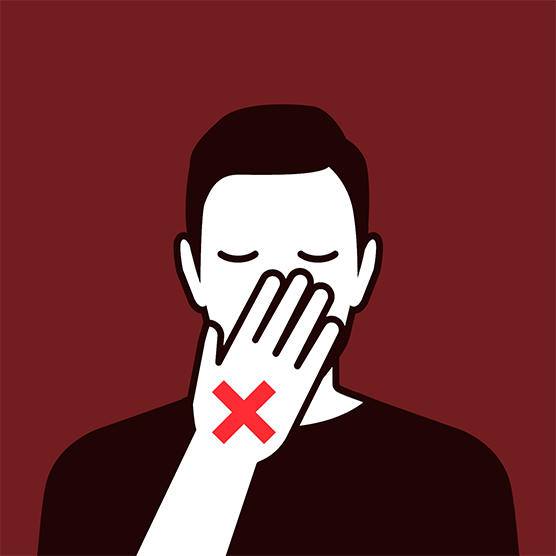

Коронавірус — це гостре вірусне захворювання, що характеризується переважним ураженням дихальної системи та шлунково-кишкового тракту. Коронавірус є зоонозною (природньою) інфекцією за походженням. Вперше був зафіксований серед людей у Китаї в місті Ухань наприкінці 2019 року та став сьогодні причиною масштабного спалаху респіраторних захворювань із важкими ускладненнями і високою смертністю.
Iмовірна передача коронавірусу від тварини до людини та поміж людьми:
- при контакті з хворим на коронавірусну інфекцію — через краплі його слини та респіраторний механізм передачі;
- при безпосередньому фізичному контакті із зараженими людьми та тваринами;
- при вживанні сирих або недостатньо термічно оброблених м’ясних і рибних продуктів, яєць.
Симптоми
-

Підвищена температура
-

Чхання
-
Кашель
-

Утруднене дихання
На початковому етапі зараження новим типом збудника ознаки коронавірусу збігаються з усіма ознаками звичайної застуди: сухий кашель, слабкість, підвищення температури. У деяких пацієнтів відзначаються ураження очей (кон'юнктивіт) та діарея. Якщо захворювання протікає в легкій формі, запалення легенів не розвивається й весь патологічний процес обмежується слабо вираженими симптомами. У таких випадках температура може підійматися незначно або взагалі залишатися в межах норми.
При важких формах захворювання стан пацієнта швидко погіршується, підіймається дуже висока температура, з'являється непродуктивний сильний кашель, розвивається дихальна недостатність. Стан хворого значно погіршується, якщо є супутні захворювання.
До симптомів слід поставитися максимально уважно, займатися самолікуванням ні в якому разі не варто.
Залишайтеся вдома і викличте лікаря за номером 103
Профілактика
-

Найважливіше, що можна зробити, — це підтримувати чистоту рук, а коли кашляєте або чхаєте, прикривайте ніс і рот одноразовою серветкою.
-

Намагайтеся не торкатися рота, носа або очей немитими руками (зазвичай ми несвідомо робимо такі дотики в середньому 15 разів на годину).
-
Дотримуйтесь правил та рекомендацій, встановлених органами влади, під час карантинного періоду.
-
Залишайтеся вдома, при появі симптомів, схожих на коронавірус, самоізолюйтель і відразу викликайте лікаря.